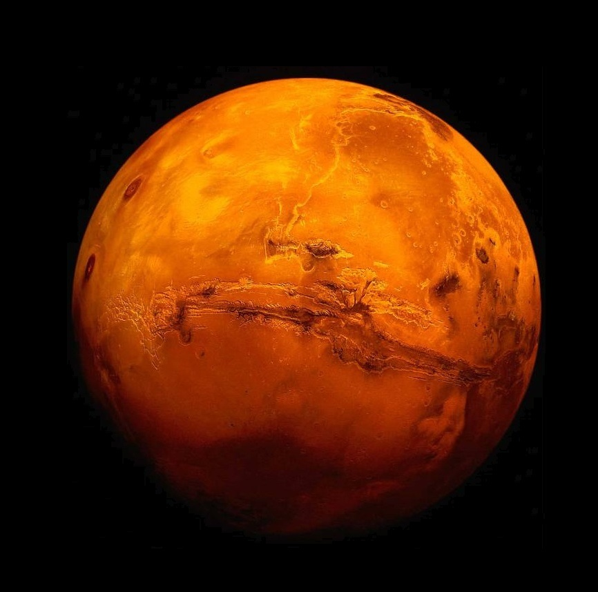

Марс е четвртата планета од Сонцето со просечна оддалеченост од 227.940.000 км (1,52 АЕ).Таа е наречена црвена планета. Дијаметарот ѝ е 6794 км (речиси двојно помал од тој на Земјата), и е седма планета според големината. Марс (грчки: Арес) е бог на војната. Планетата веројатно го добила името заради својата црвена боја, а понекогаш се нарекува и црвената планета.

Орбитата на Марс е значително елиптична. Тоа резултира со промена на температурата од 30 °C во апхел и перихел. Ова има големо влијание на климата. Додека просечната температура е 218 К (-55°С), температурата на површината се движи од 140 К (-133°С) на половите во зима, до 300 К (27 °С) преку ден во текот на летото. Иако Марс е многу помал од Земјата, копнената површина му е приближно иста како на Земјата (заради водените површини на Земјата).Освен Земјата, Марс е има најразнолик и најинтересен релјеф од сите планети од земјин тип. Поинтересните области се:
- Олимп (Olympus Mons): највисоката планина во Сончевиот систем, 21 км над околната рамнина. Основата му е над 500 км во дијаметар, обиколена со гребен висок 6 км.
- Тарсида (Tharsis): висорамнина долга 4000 км и висока 10 км.
- Маринерски Долини (Valles Marineris): систем од клисури е долг 4000 км и длабок 2-7 км.
- Елада (Hellas Planitia): кратер од удар на метеор во јужната полутопка длабок преку 6 км и 2000 км во пречник.
Марс има многу тенка атмосфера составена воглавно од јаглерод диоксид (95,3%), азот (2,7%), аргон (1,6%) и траги од кислород (0,15%) и вода (0,03%). Просечниот атмосферски притисок е само околу 7 милибари (помалку од 1% од земјниниот), но значително се менува со висината, од 9 милибари во најдлабоките басени до 1 милибар на врвот на Олимп. Но сепак доволно е густа може да се создадат многу јаки ветрови и огромни песочни бури што понекогаш и ја прекриваат целата планета со месеци. Марсовата атмосфера е толку густа што може да создаде ефект на стаклена градина, но толку јака што ја зголемува површинската температура за само 5 степени, многу помалку од влијанието на стаклената градина кај Земјата или Венера.
Марс има два мали сателити кои орбитираат многу близу до површината. Фобос е поголемиот и внатрешниот сателит на Марс. Тој е поблизу до својата планета од било кој друг сателит во Сончевиот систем, помалку од 6000 км над површината. Исто така е и еден од најмалите во Сончевиот систем со просечен дијаметар од 22,2 км (има неправилен облик 27 x 21,6 x 18,8 км). Демос е помалиот и подалечниот сателит на Марс. Еден е од најмалите природни сателити во Сончевиот систем. Орбитира на оддалеченост од 23.459 км од Марс, а димензиите му се 15 x 12,2 x 11 км (просечен дијаметар 12,6 км).
Дознај повеќе за Марс
| Апхел |
249,209,300 км 1.665 861 АЕ |
| Перихел |
206,669,000 км 1.381 497 АЕ |
| Голема полуоска |
227,939,100 км 1.523 679 АЕ |
| Орбитален период |
686.971 дена 1.8808 јул. години |
| Ѕвезден период |
779.96 дена |
| Просечна орбитална брзина |
24,007 км/с |
| Познати сателити |
2 |